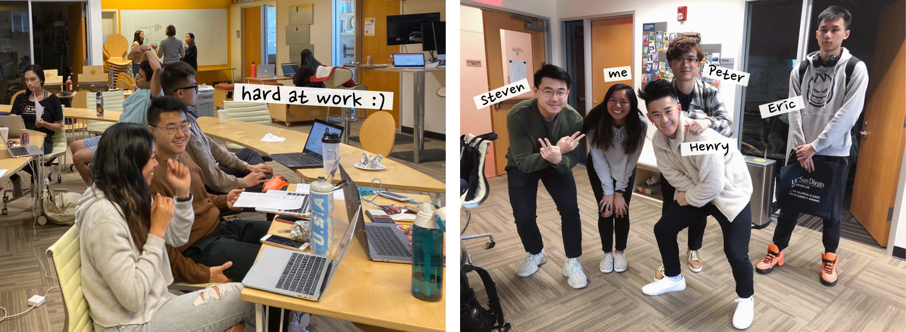

DIABETES DESIGN INITIATIVE
—Empowering Dexcom users to manage diabetes through design
PROJECT TYPE
Design sprint
ROLES
UI/UX Designer
Researcher
Developer
TEAMMATES
Steven, Peter
Eric, Henry
DURATION
7 weeks
BACKGROUND
This past fall, I was a research assistant in the UCSD Design Lab as part of their Diabetes Design Initiative team. We partnered with medical device manufacturer Dexcom for a 7-week design sprint to address common issues with their continuous glucose monitor (CGM) and the mobile app that connects to it. My sub-team started by focusing on how to help users understand the accuracy of their CGM readings, but shifted our focus to empowering users to independently troubleshoot.
EMPATHIZING
We researched issues surrounding the accuracy of CGM readings by reading through transcripts of old Dexcom user interviews, as well as looking at comments and reviews posted in Facebook groups, Reddit, and other online sites. Then we took what we learned and created a storyboard to visually define and demonstrate the main issue we had found—users being unsure of the accuracy of their CGM readings.
After defining the problem, we looked at current solutions and brainstormed new ideas. We identified the user's main need to be a feature that helps them understand their CGM readings when they feel unsure about it. We proposed a tool that checks people's symptoms and offers steps for how to proceed.
BEING ADAPTABLE
Before we began designing, we presented our findings and idea to the Dexcom team. While our solution was innovative, some concerns (regarding policies) were brought up about our idea, and we were asked to pivot our focus to helping users troubleshoot independently. And while we would've liked to pursue our original idea, it was important to understand and follow the needs of Dexcom!
So after another round of research and ideation, we found lack of information regarding session activity as a catalyst for uncertainty and inability to troubleshoot. Therefore we proposed providing users with previous and current session information in a "help" page, which they can use to self-troubleshoot.
PROTOTYPING
We continued by each creating rough sketches of our ideal design, then incorporating the best ideas from our individual sketches into one paper prototype. With this prototype we did a short round of user testing with Dexcom users and incorporated their feedback and insights into our high-fidelity prototype created in Figma. With this visual prototype, we did another round of user testing where we got insight on how to proceed with how to layout session information in a more intuitive and meaningful way.
USER TESTING
Moving forward, we developed a coded prototype made with HTML, CSS and JavaScript that we used for our final round of user testing. We tested our prototype with 8 stakeholders—ranging from people with diabetes varying in age to delegates from Dexcom. We created and used a testing script to maximize consistency and minimize bias. Overall, we received positive feedback and received a 71.25 on the system usability scale.

From our testing, we found that users liked having session information in a time based heirarchical order as well as having a filtering system to look for information efficiently. And areas we could improve on were wording and displaying too much/too little information on the pages.
PRESENTING
We took the major insights from our user testing to improve our coded prototype. Once we had our final deliverable, we created a pitch slide and poster to present our findings to Dexcom. Although I cannot disclose the final design (wireframes, prototypes, and interactions) due to NDA, I am extremely proud of what my team was able to accomplish in these 7 weeks.
MEET THE TEAM
Shoutout to my amazing teammates for being supportive, hard working, innovative, and fun!
Check out some other projects: